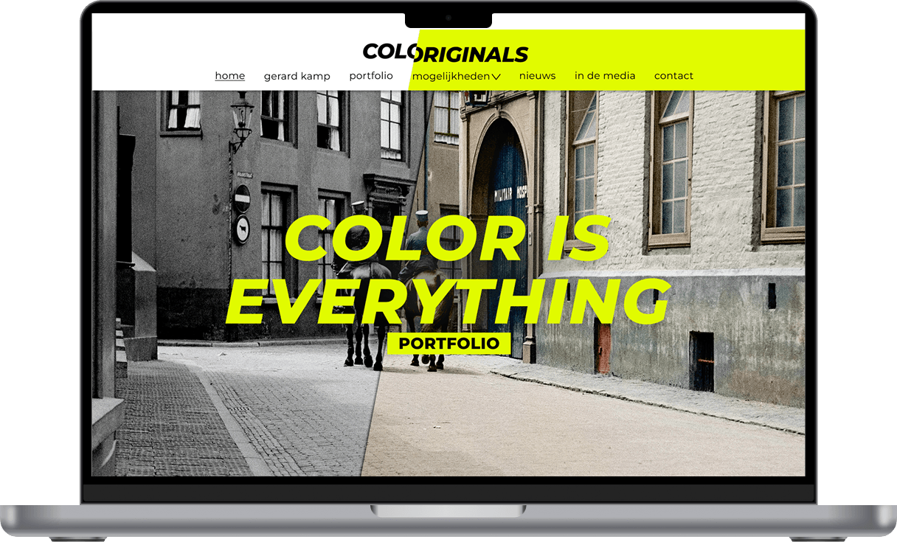
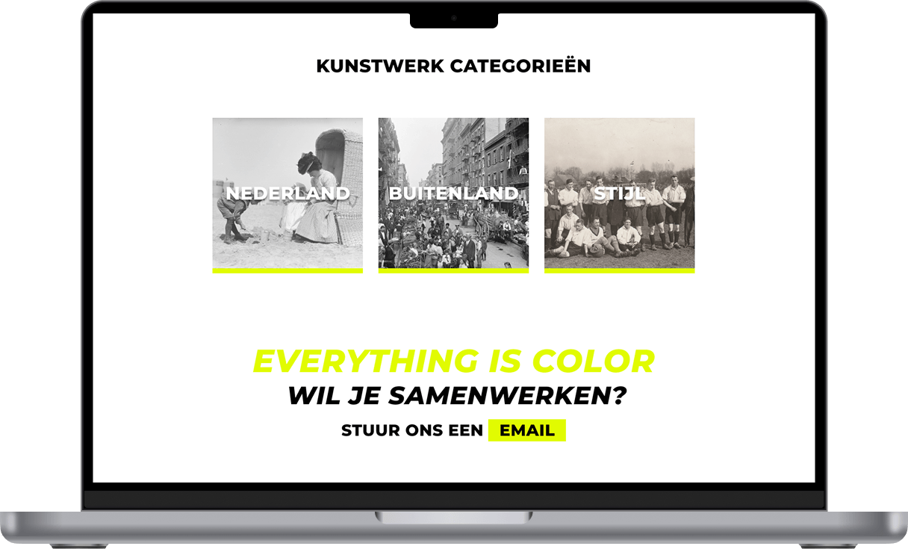
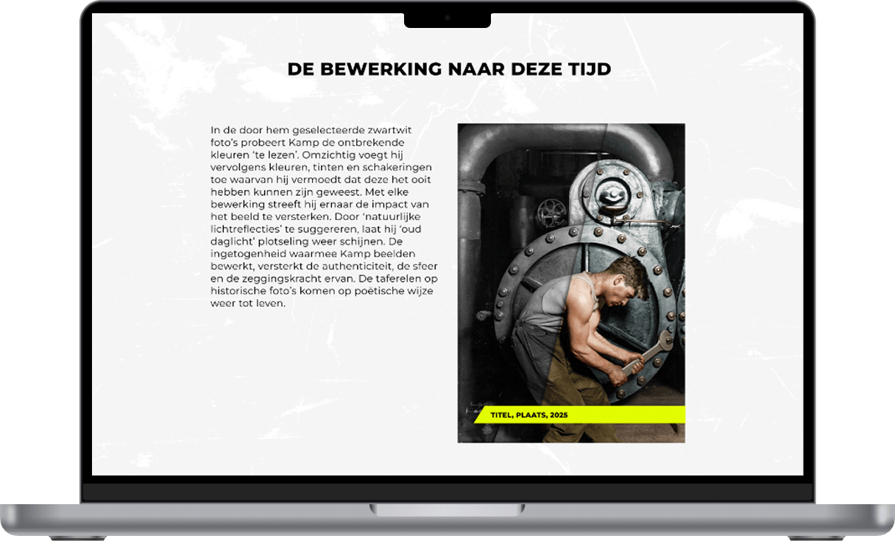

2026
Studio KLuif
While doing my internship with Studio Kluif I worked on a client project for Colorignals, I was responsible for designing a portfolio website prototype. This project focused on translating an existing brand direction into a functional and visually consistent digital experience, while also collaborating directly with the client.


Colorignals focuses on restoring and colourising old photographs. While the broader website redesign was being handled as part of a rebranding effort, I was responsible for designing the portfolio section that showcases the work.
After an initial in-person briefing, I started working in Figma. The foundation for the new branding of Colorignals was already established, but many elements of the website still needed to be designed from scratch. Originally, it was suggested to create the design in Photoshop. However, I quickly realised that this workflow did not suit me or my laptop’s performance. I decided to switch to Figma instead, which turned out to be a much more effective choice. Figma allowed the client to follow the design process live and provide immediate feedback. This made collaboration smoother and more dynamic. Adjustments could be implemented quickly, especially through the use of components, which ensured consistency across the design and made iteration efficient.
